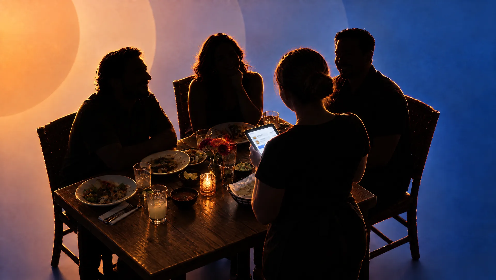
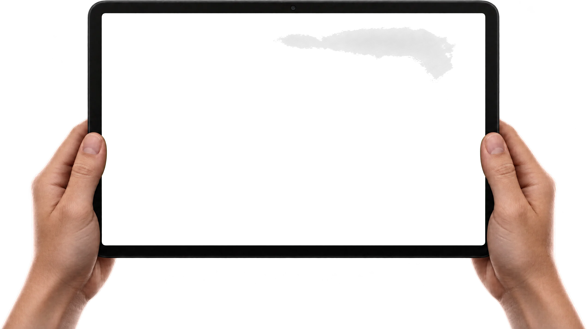
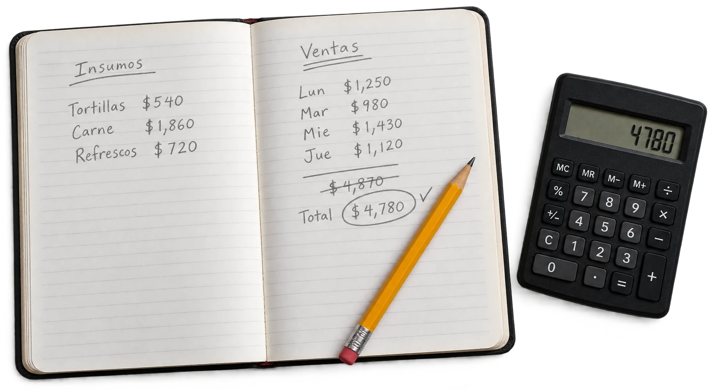

Punto de venta
Toma pedidos y cierra cuentas desde la mesa.
El siguiente nivel para los restaurantes de México: un solo sistema, sin piezas sueltas, con inteligencia artificial.
Entra con tu correo y tu contraseña para administrar tu restaurante.
Lo vendido hoy, tus mesas, lo más vendido y lo último de tu menú, de un vistazo.
Agrega tus platillos con foto, precio y categoría, y ocúltalos cuando se agoten.
Qué mesas están ocupadas, desde hace cuánto y cuánto llevan de cuenta.
Pregúntale lo que quieras de tu negocio: te responde con las cifras de tus ventas cerradas.
Elige un platillo y el formato, y la IA arma tu anuncio para Instagram con los datos de tu negocio.
Todos tus anuncios guardados por día, posts e historias, listos para descargar.




¿Sigues anotando tus ventas a mano y sumando con la calculadora? Nuestro sistema lo hace por ti.

Toma pedidos y cierra cuentas desde la mesa.
Deja la calculadora: pregúntale cuánto vendiste.